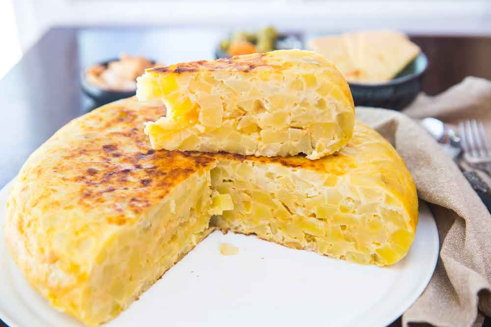

Potato Omelette

The potato omelet or Spanish omelet is a tortilla or omelet to which chopped potatoes are added.
It is one of the best-known and emblematic dishes of Spanish cuisine, being a very popular product
that can be found in almost any bar or restaurant in the country.
Ingredients
- Potatos
- Eggs
- Oil
- Onion (optional)
- Salt
Steps
- Cut and fry 2 to 4 potatos depending the size and people who are going to eat.
- Cut and add the onion if you want to add it.
- Shake 3 to 5 eggss in a bowl and then add the fried and still hot potatos there to mix everything.
- Then fry the mixture over low heat just to cook the outer layer and keep the inside juicy, depending on your preference.
- Finally add some salt and you have got it!
Other recipes